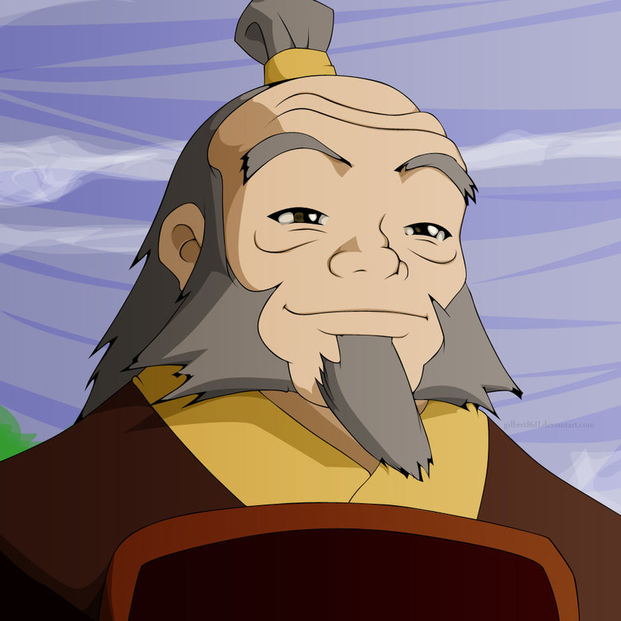
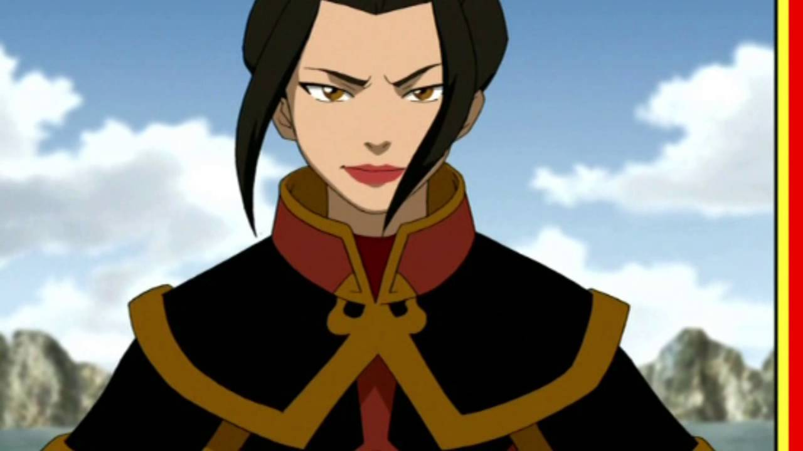
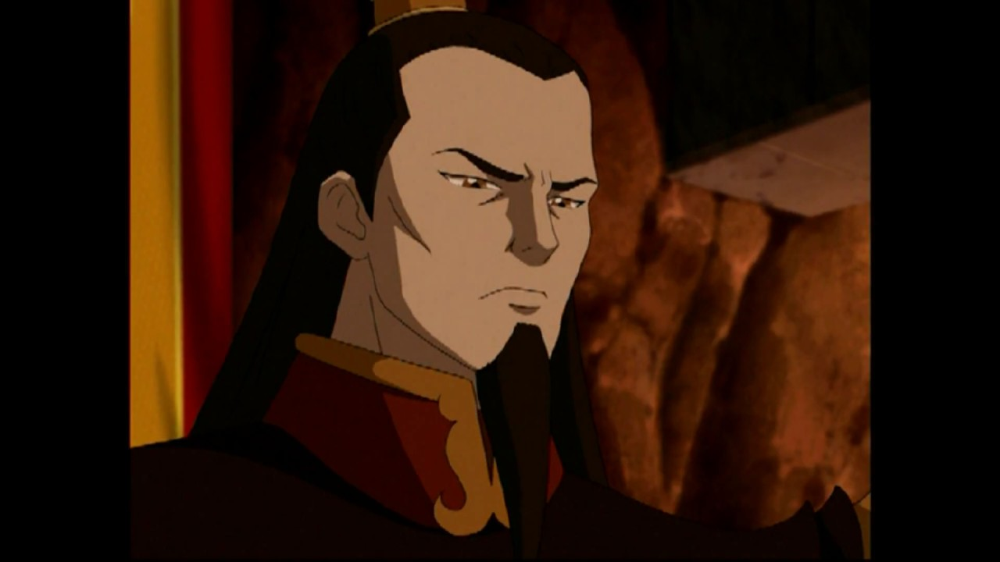

| 1 |
|
Zuko |
El Señor del Fuego Zuko es un Maestro del Fuego Control, nacido como Príncipe heredero de la Familia Real de la Nación del Fuego. Su historia a menudo fue paralela a la del Avatar Aang. Inicialmente, fue el principal enemigo del Equipo
Avatar, la vida de Zuko giraba en torno a tratar de capturar al Avatar perdido hace mucho tiempo para poner fin a su exilio y recuperar su honor como el Príncipe heredero de la Nación del Fuego. Zuko se reconoce fácilmente por
la cicatriz distintiva en el lado izquierdo de su cara, que recibió a la edad de trece años en un Agni Kai contra su padre, el Señor del Fuego Ozai, poco antes de su destierro. El combate fue el resultado de un incidente en el
que sin querer faltó el respeto a su padre por hablar fuera de turno y negarse a luchar contra él. |
| 2 |

|
Iroh |
Iroh fue un general retirado de la Nación del Fuego, un anterior príncipe heredero de su nación, Gran Loto de la Orden del Loto Blanco, un Maestro Fuego, y un sabio mentor para su sobrino Zuko. Él era el primogénito del Señor del Fuego
Azulon e Ilah, y el hermano mayor de Ozai. La bien conocida habilidad de Iroh de respirar fuego, y sus afirmaciones de "matar" al último dragón, le valieron el título honorífico de "El Dragón del Oeste" |
| 3 |

|
Azula |
Azula era la Princesa de la Nación del Fuego, hija del Señor del Fuego Ozai y la Princesa Ursa, y la hermana menor de su enemigo, el Señor del Fuego Zuko y medio-hermana de Kiyi. Ella fue un adversario clave del Equipo Avatar, persiguiendo
al Avatar Aang y su hermano desterrado a través del Reino Tierra en compañía de sus dos mejores amigas, Mai y Ty Lee. Una prodigio del Fuego Control, Azula era sádica, manipuladora y obsesionada con el poder. Ella era una estratega
experta que orquestó la victoria de la Nación del Fuego sobre la capital del Reino Tierra, Ba Sing Se, y detuvo la invasión en el Día del Sol Negro. |
| 4 |

|
Ozai |
El Señor del Fuego Ozai fue el gobernante tiránico de la Nación del Fuego durante los últimos años de la Guerra de los Cien Años. Fue el segundo hijo de Azulon y Ilah, el hermano menor de Iroh, el marido de Ursa, y el padre del Príncipe
Zuko y la Princesa Azula. Como cada Señor del Fuego, Ozai fue un Maestro del Fuego Control, y antes del final de la Guerra, se creía que había sido uno de los Maestros Fuego más poderosos en el mundo. Después que el único hijo
de Iroh, Lu Ten, muriera, Ozai usurpó el derecho de primogenitura de su hermano al trono, en un plan que resultó en la muerte de su padre y el destierro de Ursa. Al igual que su padre y su abuelo antes que él, Ozai trató de conquistar
las otras naciones y convertirse en el gobernante supremo del mundo. Para ello tenía previsto utilizar el Cometa de Sozin para quemar el Reino Tierra, renunciando al título de Señor del Fuego y declarándose como el Rey Fénix, gobernante
del mundo. Antes de que sus planes pudieran llegar a su final, fue derrotado por el Avatar Aang, quien utilizó Energía Control para eliminar sus habilidades de Fuego Control permanentemente. |
| 5 |

|
Avatar Roku |
El Avatar Roku fue un Avatar nacido en la Nación del Fuego, sucesor inmediato del Avatar Kyoshi y predecesor del Avatar Aang. En forma de espíritu, Roku sirvió como una fuerza orientadora para Aang a lo largo de su búsqueda para poner
fin a la Guerra de los Cien Años. Como noble de la Nación del Fuego, Roku conoció y se hizo gran amigo del Príncipe Sozin, y en un futuro, se casaría con una ciudadana de la alta clase de la Nación del Fuego llamada Ta Min, con
quien tuvo una hija llamada Rina, quien a su vez dio a luz a una niña llamada Ursa. Roku era un Avatar sabio y misericordioso con buenas intenciones, aunque él mismo reconoció que fue demasiado indeciso durante su vida mortal.
La larga amistad de Roku con el Señor del Fuego Sozin dio lugar a su rechazo a acabar con la vida de su amigo y por lo tanto a sus ambiciones imperiales. Esto condujo en última instancia a la muerte de Roku, ya que aún no se atrevía
a poner fin a la vida de su buen amigo, y por lo tanto, no pudo evitar una gran guerra, que duraría cien años. El Avatar Aang heredó la carga de Roku de sanar a un mundo desgarrado por la guerra, y Roku creía firmemente que Aang
estaba destinado a enmendar sus errores. |